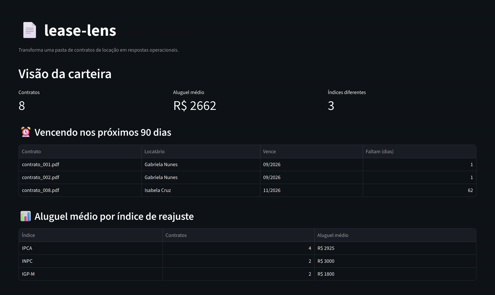

Lease Lens no ar
Dá pra transformar uma pasta de contratos em PDF em respostas operacionais?
- o que eu fiz
- Pipeline em camadas: extração com pdfplumber, estruturação por regex com score de confiança, SQLite, e consultas agregadas. Interface em Streamlit pra ver a carteira e testar um contrato na hora.
- o que foi difícil
- Um regex de endereço parava no primeiro ponto e truncava o dado marcando 100% de confiança. Me ensinou que achou algo não é achou certo.
- o que ficou
- Extração de PDF, regex pra dado estruturado, SQL analítico, e arquitetura em camadas que separa domínio de interface. Tudo com contratos sintéticos, por escolha.
PythonpdfplumberSQLiteStreamlit
